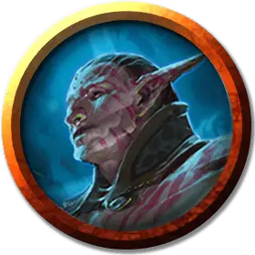

Мерфолк Симиков
Simic Merfolk
Средний Гуманоид (Мерфолк), нейтральный

Класс Доспеха 11
Хиты 11 (2к8 + 2)
Скорость 30 футов, плавая 40 футов
| мод | спас | ||
|---|---|---|---|
| СИЛ | 10 | +0 | +0 |
| ЛОВ | 13 | +1 | +1 |
| ТЕЛ | 12 | +1 | +1 |
| мод | спас | ||
|---|---|---|---|
| ИНТ | 11 | +0 | +0 |
| МДР | 11 | +0 | +0 |
| ХАР | 12 | +1 | +1 |
Навыки Восприятие +2
Чувства пассивное Восприятие 12
Языки Общий, Мерфолк
Опасность 1/8 (25 опыта)
Бонус мастерства +2
Среда обитания Побережье, Под водой
Особенности
Амфибия. Мерфолк может дышать и воздухом и под водой.
Действия
Копье. Рукопашная или дальнобойная атака оружием: +2 к попаданию, досягаемость 5 футов или дистанция 20/60 футов, одна цель. Попадание: Колющий урон 3 (1к6), или колющий урон 4 (1к8), если используется двумя руками для совершения рукопашной атаки.
Описание
Мерфолки Равники - уникальное явление для Симиков. Они появились из глубин давно погребенных океанов планеты менее века назад и сразу же заняли лидирующие позиции в гильдии. Они утверждают, что имеют глубокую связь с первозданными океанами Равники, которые почти не тронуты цивилизацией.
Мерфолки
Мерфолки — раса, обитающих в воде гуманоидов, верхняя часть тела которых человеческая, а нижняя — рыбья. Они используют ракушки для украшения своей кожи и чешуи.
Племена и королевства мерфолков простираются по всему миру, а их народы различны по цвету, культуре и взглядам подобно человеческой расе на суше. Наземные народы и мерфолки редко встречаются, но мечтательные моряки рассказывают истории о романтических встречах с этими существами на берегах далеких островов.
У мерфолков отсутствуют материалы и реальные возможности для того, чтобы выковать оружие на дне моря, написать книги, сохранить знания или придать форму камню, чтобы возвести здания и города. Поэтому большинство живет в маленьких племенах охотников и собирателей, каждое из которых обладает уникальными ценностями и убеждениями. Время от времени, мерфолки объединяются под предводительством единого лидера. Они делают это чтобы противостоять общей угрозе или совершить завоевание. Такие объединения могут создать подводные королевства и династии, продолжающиеся сотни лет.
Поселения мерфолков. Мерфолки основывают свои поселения в обширных подводных пещерах, коралловых лабиринтах, руинах затопленных городов или сооружениях, которые они вырезали из скалистого морского дна. Они живут на мелководье, где можно различить усиление и ослабление света солнца через толщу воды. В рифах и рвах рядом со своим поселением мерфолки добывают кораллы, возделывают морское дно и пасут косяки рыб, как наземные фермеры пасут овец. Лишь изредка они отваживаются на путешествие в темные бездны океана. На таких глубинах и в подводных пещерах мерфолки полагаются на свет, исходящий от растительности и животных наподобие медуз, чьи слабые пульсирующие движения наделяют поселения мерфолков особой эстетикой.
Мерфолки защищают свои поселения с копьями, сделанными из таких материалов, которые они могут собрать после кораблекрушений, с пляжей и с мёртвых подводных существ.